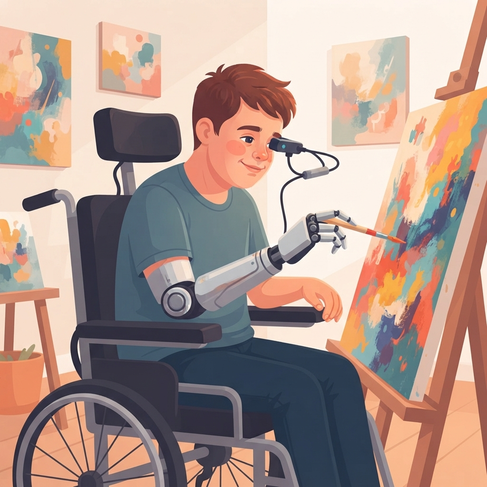
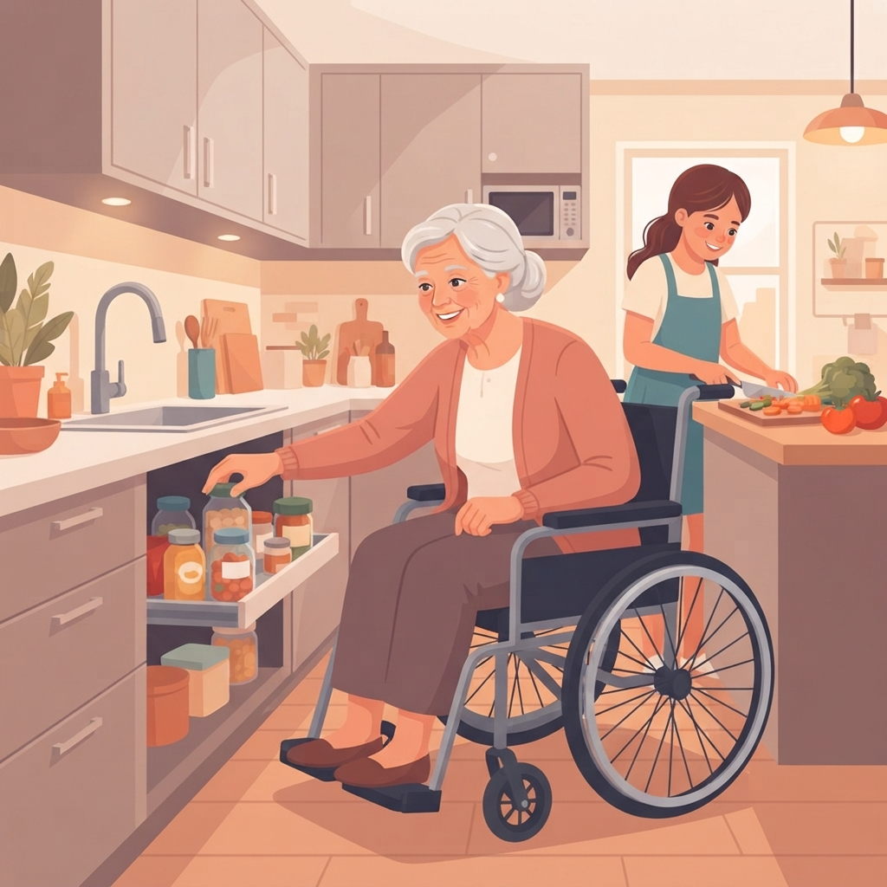
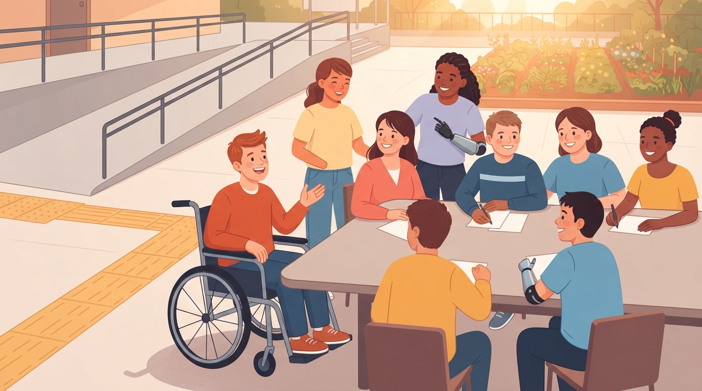

Galería
Un grupo diverso de jóvenes —entre ellos un chico usuario de silla de ruedas y personas con prótesis articuladas— dialoga y colabora alrededor de una mesa en una plaza pública equipada con rampa y pavimento podotáctil, reflejando la convivencia y la participación ciudadana en igualdad.


Vídeo de presentación
En este vídeo te contamos el proyecto en menos de un minuto y medio.